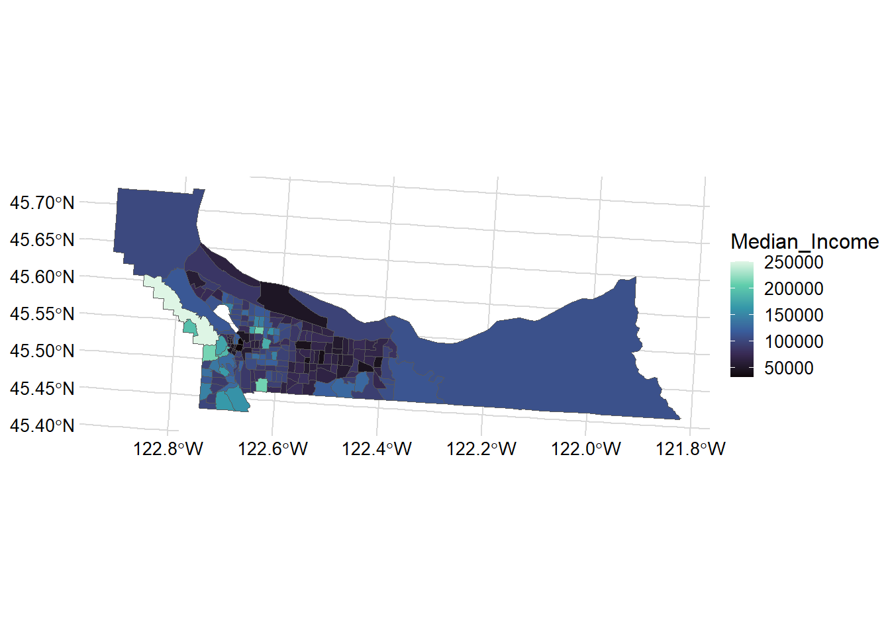
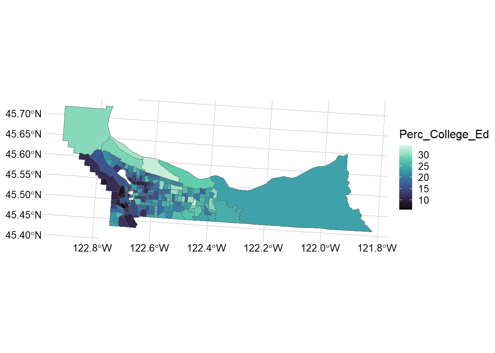
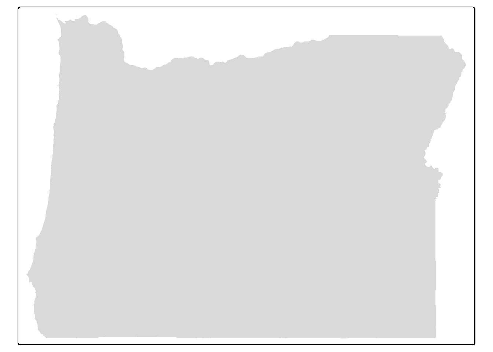
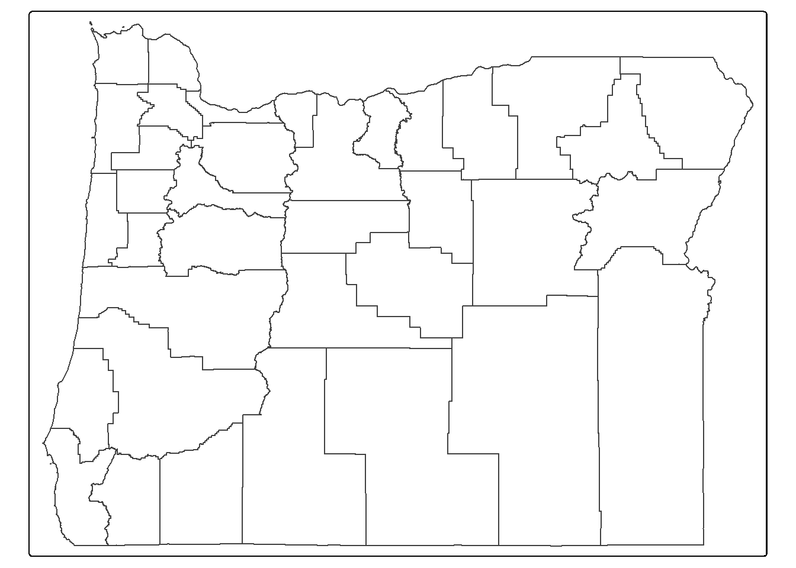
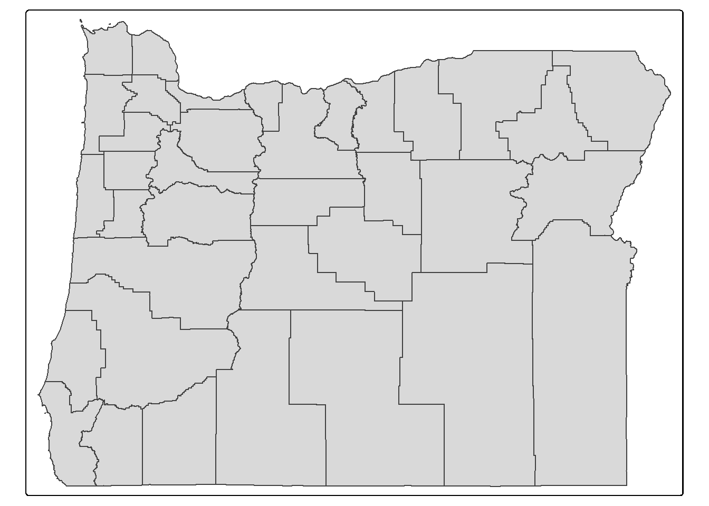
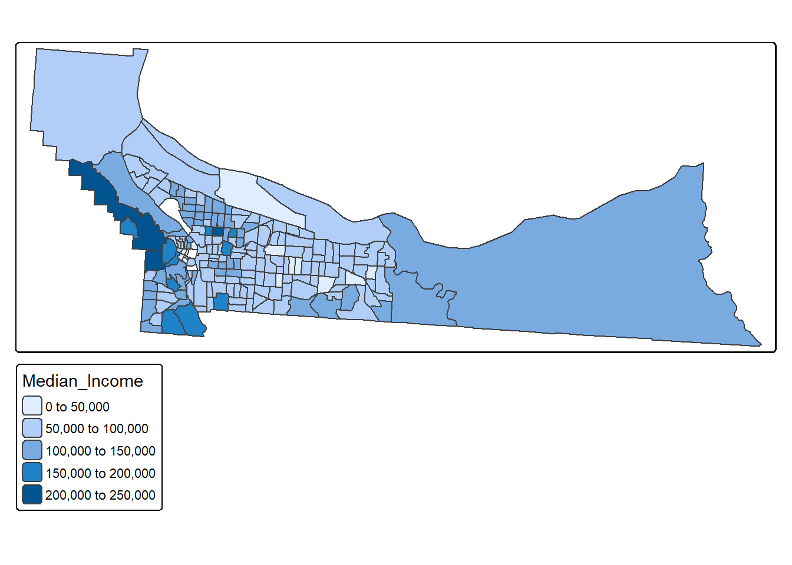
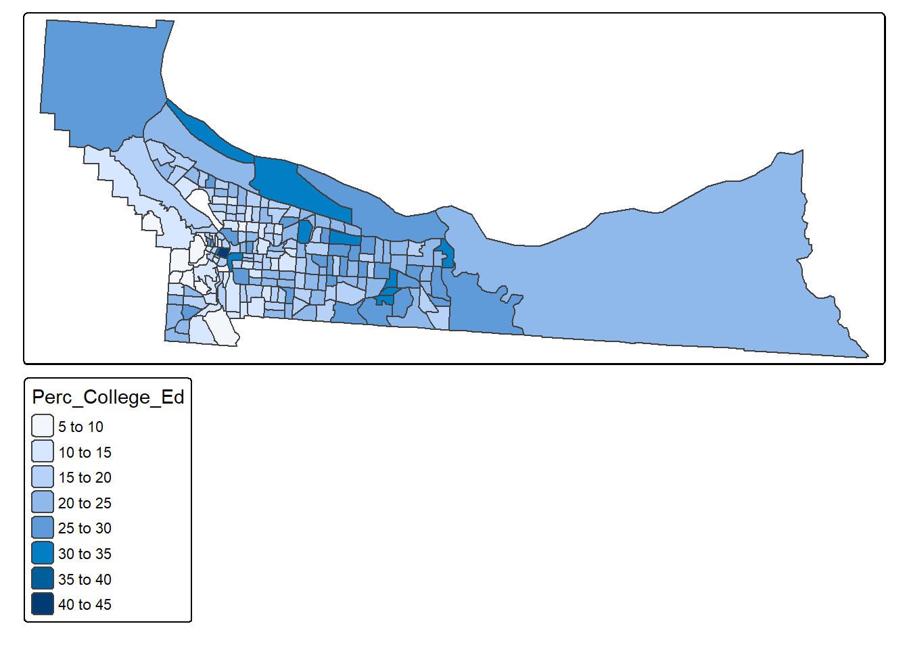
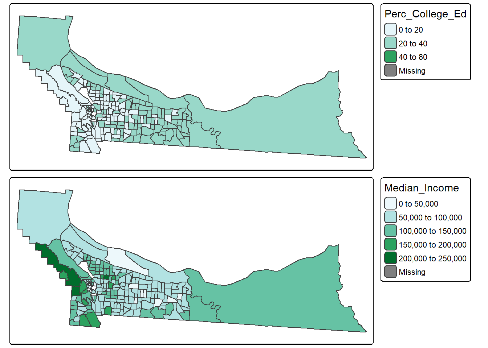
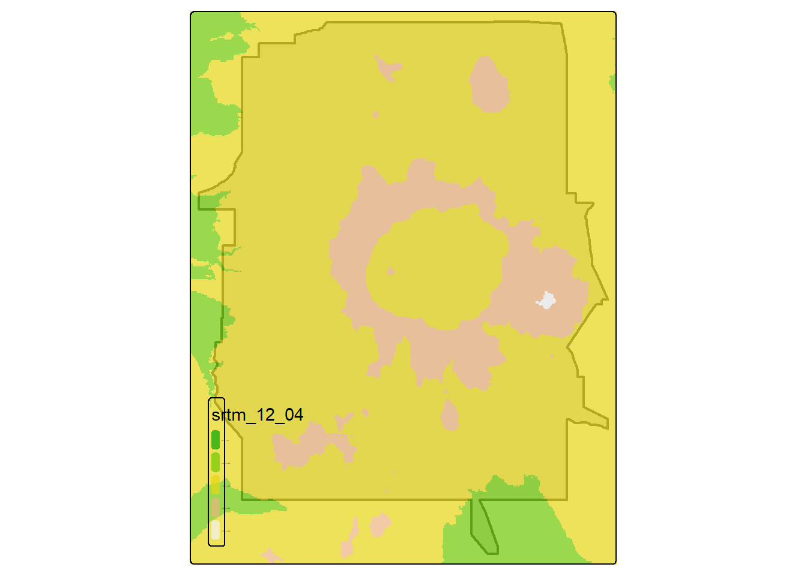

2 Mapping
We’ll explore a few of the primary libraries in R for mapping (both static and dynamic).
2.1 Goals and Outcomes
- Gain familiarity with plotting and visualizing spatial data in R
- Work with four specific visualization and plotting libraries:
ggplot2leafletmapviewtmap
Throughout this section we’ll use the following packages:
R is fantastic for making publication quality static maps, and for generating repetitive graphics through scripts; we’ve already seen examples of how to make simple maps using base plotting,ggplot, and tmap. There are also several packages in R that link R code to plotting libraries developed in Javascript (or other languages) for interactive plotting and web integration.
It can be hard to decide which mapping packages to learn and use - some nice advice from Martin Tennekes who created tmap:
- If you know some
ggplot, don’t care about interactive maps, and don’t want to spend a lot of time learning new packages, useggplot - If you want interactive maps as flexible as possible, use
leaflet - If you want to simply explore spatial objects ineractively as easily as possible, use
mapview - Otherwise, use
tmap!
Also, as pointed out in Spatial Data Science by Edzar Pebesma and Roger Bivand, ‘Every plot is a projection’ so it’s essential to have an understanding of coordinate reference systems and projections when visualizing spatial data in R - as they point out ‘any time we visualize, in any way, the world on a flat device, we project: we convert ellipsoidal coordinates into Cartesian coordinate’.
2.2 ggplot2
ggplot2 now has support for geom_sf that was developed in conjunction with the development of sf and helps creating publication quality maps directly using sf objects. An introduction to this is found in Moreno and Basille (2018).
Here we’ll show some of the useful functionality of ggplot2 with geom_sf objects pulling census and American Community Survey data using the tidycensus package.
Note that to use tidycensus you’ll need to set your Census API key. A key can be obtained from here.
#|warning: false
#|message: false
mult_tracts <- tidycensus::get_acs(state='OR',county='Multnomah',geography='tract', variables=c('B19013_001','B16010_028','B01003_001'), geometry=TRUE) Getting data from the 2018-2022 5-year ACSDownloading feature geometry from the Census website. To cache shapefiles for use in future sessions, set `options(tigris_use_cache = TRUE)`.# tidy data
mult_wide <- mult_tracts |>
sf::st_transform(2955) |> #UTM 11N
dplyr::filter(!is.na(estimate)) |>
tidyr::pivot_wider(
names_from = c("variable"),
values_from = c("estimate","moe")
) |>
dplyr::relocate(geometry, .after = last_col())
names(mult_wide)[3:5] <- c('Total_Pop','College_Education','Median_Income')
mult_wide <- mult_wide |>
dplyr::mutate(Perc_College_Ed = (College_Education / Total_Pop) * 100) |>
dplyr::filter(!is.na(Median_Income) & !is.na(Perc_College_Ed))
# Median Income
mult_wide |>
ggplot() + geom_sf(aes(fill = Median_Income)) +
scale_y_continuous() +
scale_fill_viridis_c(option = "mako") +
theme_minimal_grid(12)
mult_wide |>
ggplot() + geom_sf(aes(fill = Perc_College_Ed)) +
scale_y_continuous() +
scale_fill_viridis_c(option = "mako") +
theme_minimal_grid(12)
A great resource for mapping with ggplot2 is this blog post from 2018.
2.3 leaflet
Leaflet is an extremely popular open-source javascript library for interactive web mapping, and the leaflet R package allows R users to create Leaflet maps from R. Leaflet can plot sf or sp objects, or x / y coordinates, and can plot points, lines or polygons. There are a number of base layers you can choose from. It’s worth spending some time exploring the excellent Leaflet for R site.
Here we make a simple leaflet map of our the location of the EPA Pacific Ecological Systems Division lab in Corvallis where I work with a custom popup we create:
content <- paste(sep = "<br/>",
"<b><a href='https://www.epa.gov/greeningepa/pacific-ecological-systems-division-pesd-laboratory'>EPA Lab Corvallis</a></b>",
"200 S.W. 35th Street ",
"Corvallis, OR 97333 "
)
leaflet() |> addTiles() |>
addPopups(-123.290391, 44.565548, content,
options = popupOptions(closeButton = FALSE)
)2.4 mapview
Mapview is a package designed for quick and easy interactive visualizations of spatial data - it makes use of leaflet but simplifies mapping functions compared to the leaflet package.
It’s easy to layer features with mapview - you can supply a list of objects to mapview or use + syntax as with ggplot.
Here we’ll plot stream gages within Benton County:
counties <- counties("Oregon", cb = TRUE)
benton <- counties[counties$NAME=='Benton',]
fpath <- system.file("extdata", "Gages_flowdata.csv", package="Rspatialworkshop")
gages <- read_csv(fpath,show_col_types = FALSE)
gages_sf <- gages %>%
st_as_sf(coords = c("LON_SITE", "LAT_SITE"), crs = 4269, remove = FALSE)
st_crs(gages_sf)==st_crs(benton)
# remember spatial indexing from Geoprocessing section?
gages_benton <- gages_sf[benton,]
mapview(gages_benton) + bentonWe can also use handy convenience packages like the AOI package by Mike Johnson for flexible, term based geocoding to return areas of interest as sf objects and map them:
AOI::aoi_ext(geo = "Corvallis, OR", wh = 10000, bbox = TRUE) |>
sf::st_as_sf() |>
AOI::aoi_map(returnMap = T)
2.4.1 Adding Web Map services in mapview
We’ll visualize data with mapview and load a web map service layers alongside using mapview and underlying leaflet functionality.
First we load load an excel file containing coordinate information in a known projection and promote to an sf spatial data frame.
fpath <- system.file("extdata", "Station_Locations.xlsx", package="Rspatialworkshop")
stations <- read_xlsx(fpath)
glimpse(stations)Rows: 31
Columns: 3
$ Station <chr> "1", "2", "3", "4", "5", "6", "7", "8", "9", "10", "11", "12",…
$ x <dbl> -2140749, -2140111, -2124688, -2125545, -1664112, 1606578, -17…
$ y <dbl> 2502887, 2469697, 2533842, 2556987, 2770644, 2698398, 2664873,…summary(stations$x) Min. 1st Qu. Median Mean 3rd Qu. Max. NA's
-2259078 -2124688 -1561956 -1630593 -1454137 1606578 2 # common clean up steps for spatial data - we can't use data missing coordinates so drop those records
stations <- stations[complete.cases(stations),]
# often spatial data in projected coordinates will have missing negative values for x values - common thing to fix:
stations$x[stations$x > 0] <- 0 - stations$x[stations$x > 0]
stations <- stations |>
st_as_sf(coords = c("x", "y"), remove = FALSE)
# in this case we know the particular Albers projection and have the information as a proj string
st_crs(stations) <- "+proj=aea +lat_1=29.5 +lat_2=45.5 +lat_0=23 +lon_0=-96 +x_0=0 +y_0=0 +ellps=GRS80 +datum=NAD83 +units=m +no_defs" Basic interactive map of our spatial stations with mapview:
mapview(stations)Here we’ll load a web map servcice (WMS) for the National Hydrography dataset. We’re looking at stream stations so imagine we want to visualize how closely these sites match a known rivers and stream network:
# create a mapview object with our stations:
m <- mapview(stations, legend=FALSE)
# we configure the map attribute of our mapview object - try:
# 'attributes(m)
# to see those attributes
# The map attribute for mapview accepts leaflet methods - in this case we use addWMSTiles to add web map service tiles to the map
m@map <- m@map |> addWMSTiles(group = 'NHDPlus',
"https://watersgeo.epa.gov/arcgis/services/NHDPlus_NP21/NHDSnapshot_NP21/MapServer/WmsServer?",
layers = 4,
options = WMSTileOptions(format = "image/png", transparent = TRUE),
attribution = "") |> addWMSTiles(group = 'NHDPlusHR',
"https://hydro.nationalmap.gov/arcgis/services/NHDPlus_HR/MapServer/WMSServer?",
layers = 9,
options = WMSTileOptions(format = "image/png", transparent = TRUE),
attribution = "") |> mapview:::mapViewLayersControl(names = c("NHDPlus","NHDPlusHR"))
m2.5 tmap
tamp uses the same syntax as ggplot: the grammar of graphics - and it supports both static and interactive modes. Like ggplot2, each dataset added to a tmap plot can be mapped in a number of different ways such as location, color, size, etc. The Making maps with R section of Geocomputation with R has an excellent and in depth treatment of using tmap.
We can explore the basics using the counties of Oregon data we’ve been using in previous examples and exersices.

# Add border layer to Oregon counties
tm_shape(counties) +
tm_borders() 
# Add fill and border layers to Oregon counties
tm_shape(counties) +
tm_fill() +
tm_borders() 
2.5.1 Choropleths with tmap
tm_shape(mult_wide) + tm_polygons("Median_Income")
tm_shape(mult_wide) + tm_polygons("Perc_College_Ed")
That’s a pretty basic map - we can adjust a number of settings such as:
- breaks: we can set different breaks for our map
- bins: we can control the number of bins
- palette: we can change the color palette
- layout: put the legend outside of the map, increase legend width
These are just a few - let’s play with those to start with.
breaks = c(0, 20, 40, 80)
t1 <- tm_shape(mult_wide) + tm_polygons("Perc_College_Ed", breaks=breaks,palette = "BuGn") + tm_layout(legend.outside=TRUE, legend.outside.position = "right", legend.outside.size=.5)── tmap v3 code detected ───────────────────────────────────────────────────────[v3->v4] `tm_tm_polygons()`: migrate the argument(s) related to the scale of
the visual variable `fill` namely 'breaks', 'palette' (rename to 'values') to
fill.scale = tm_scale(<HERE>).t2 <- tm_shape(mult_wide) + tm_polygons("Median_Income", n=3,palette = "BuGn") + tm_layout(legend.outside=TRUE, legend.outside.position = "right", legend.outside.size=.5)
tmap_arrange(t1, t2, nrow = 2)[cols4all] color palettes: use palettes from the R package cols4all. Run
`cols4all::c4a_gui()` to explore them. The old palette name "BuGn" is named
"brewer.bu_gn"
Multiple palettes called "bu_gn" found: "brewer.bu_gn", "matplotlib.bu_gn". The first one, "brewer.bu_gn", is returned.
[cols4all] color palettes: use palettes from the R package cols4all. Run
`cols4all::c4a_gui()` to explore them. The old palette name "BuGn" is named
"brewer.bu_gn"
Multiple palettes called "bu_gn" found: "brewer.bu_gn", "matplotlib.bu_gn". The first one, "brewer.bu_gn", is returned.
2.5.2 Faceting
# Set mode to interactive
tmap_mode("view")ℹ tmap mode set to "view".# Plot it out
tm_shape(mult_wide) + tm_polygons(c("Median_Income", "Perc_College_Ed")) + tm_facets(sync = TRUE, ncol = 2)2.5.3 Plotting rasters and vectors with tmap
Bring in boundary and elevation of Crater Lake NP (datasets in Rspatialworkshop package) and plot with tmap
# Set mode to plot
tmap_mode("plot")
data(CraterLake)
raster_filepath <- system.file("extdata", "elevation.tif", package = "Rspatialworkshop")
elevation <- rast(raster_filepath)
map_crlk <- tm_shape(CraterLake) + tm_polygons(lwd = 2)
map_crlkel = map_crlk +
tm_shape(elevation) + tm_raster(alpha = 0.7,palette = terrain.colors(12)) + tm_layout(legend.position = c("left","bottom"),
legend.width = 1)
map_crlkel